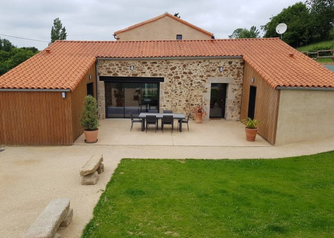
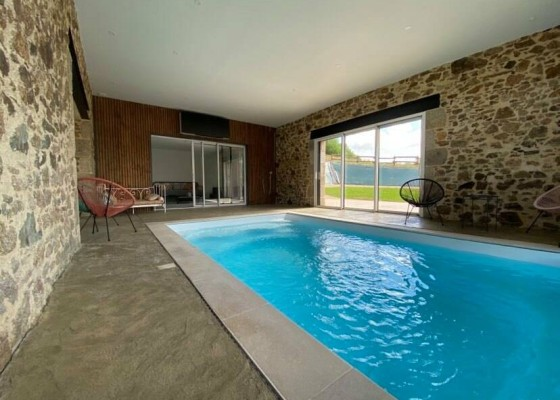
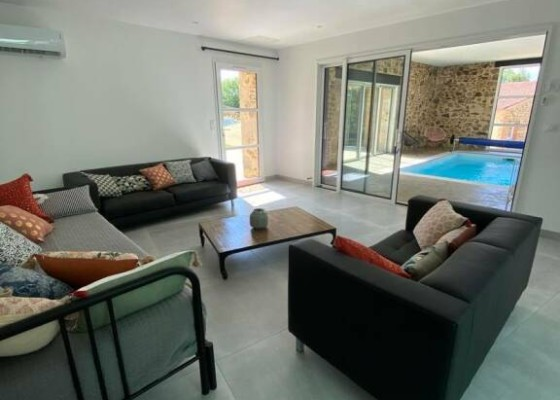

In his tractibus navigerum nusquam visitur flumen sed in locis plurimis aquae suapte natura calentes emergunt ad usus aptae multiplicium medelarum. verum has quoque regiones pari sorte Pompeius Iudaeis domitis et Hierosolymis captis in provinciae speciem delata iuris dictione formavit.
Ibi victu recreati et quiete, postquam abierat timor, vicos opulentos adorti equestrium adventu cohortium, quae casu propinquabant, nec resistere planitie porrecta conati digressi sunt retroque concedentes omne iuventutis robur relictum in sedibus acciverunt.
Eodem tempore Serenianus ex duce, cuius ignavia populatam in Phoenice Celsen ante rettulimus, pulsatae maiestatis imperii reus iure postulatus ac lege, incertum qua potuit suffragatione absolvi, aperte convictus familiarem suum cum pileo, quo caput operiebat, incantato vetitis artibus ad templum misisse fatidicum, quaeritatum expresse an ei firmum portenderetur imperium, ut cupiebat, et cunctum.

Rogatus ad ultimum admissusque in consistorium ambage nulla praegressa inconsiderate et leviter proficiscere inquit ut praeceptum est, Caesar sciens quod si cessaveris, et tuas et palatii tui auferri iubebo prope diem annonas. hocque solo contumaciter dicto subiratus abscessit nec in conspectum eius postea venit saepius arcessitus.
Itaque verae amicitiae difficillime reperiuntur in iis qui in honoribus reque publica versantur; ubi enim istum invenias qui honorem amici anteponat suo? Quid? Haec ut omittam, quam graves, quam difficiles plerisque videntur calamitatum societates! Ad quas non est facile inventu qui descendant. Quamquam Ennius recte.